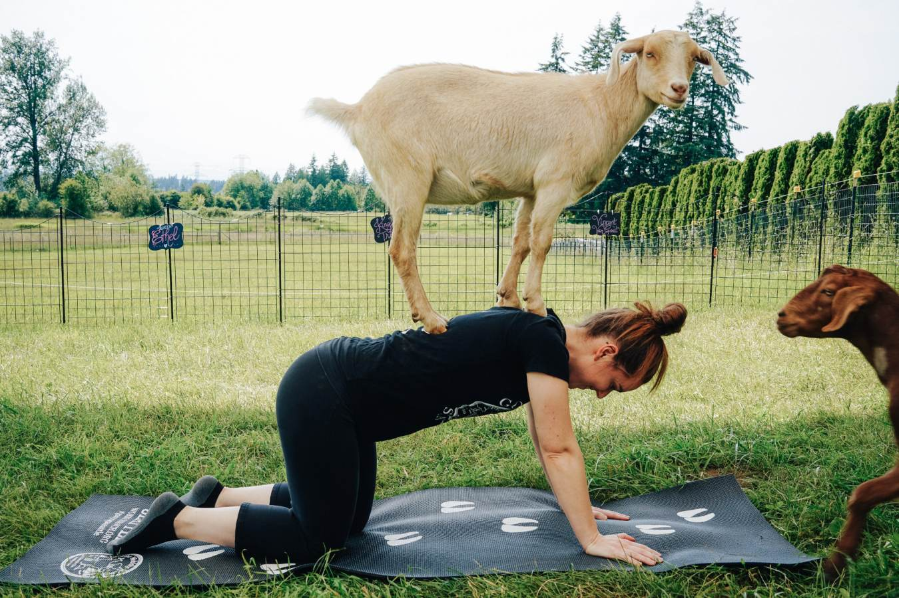
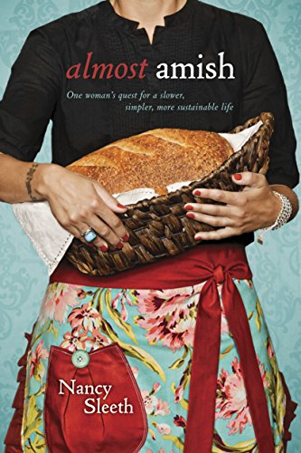
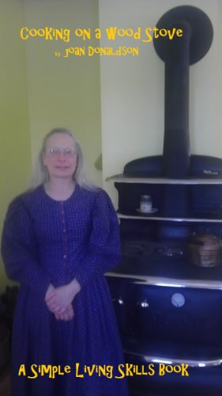

In-Store Demos and Events
Body and Mind - Introduction to Goat Yoga

Haven't heard of
Goat Yoga? Believe it or not it's a thing. Yoga
is not just for the young and in shape. Many
seniors are seeing improvements in their
flexibility and balance. Why Goat Yoga? Our customers enjoy yoga,
and we've got your goat! Being in a rural setting, we've got plenty
of goats.
Yoga instructor Stephanie Brooke will lead the classes, and all
"kidding" about goats and yoga aside, it's serious fun. "It's
sometimes difficult to ignore the cuteness and stay serious" says
Brooke. She is mixing it up this year with a new trend,
Baby Goat Yoga.
Almost Amish - Lecture and Book Signing

Nancy Sleeth has recently been spending most her life living in an amish
paradise. Dispite what "Wierd Al" Yankovic might think, we think she is
on to something. Nancy didn't like the way she was spending her life,
and sought to simplify it.
Her book,
"Almost Amish" is about making a consious choice to
limit (or in some cases eliminate) the hold that technology has on our
lives. By doing so,we can lead a calmer, focused life with deeper
relationships. This would include our relationship with the Almighty.
Nancy will be joining us to speak aobut her environmental and spiritual
conversion experience. Prior to her new calling, Nancy served as a
communications director for a Forune 500 company. She now travels
throughout the U.S. speaking and writing about faith, and our impact
on the environment.
Cooking on a Wood Stove - Book Signing and Demo

Our stove department is constantly asked for a good starter book for
wood stove beginners. We have one for you. In Joan Donaldson's book,
"Cooking on a Wood Stove".
While this book is a little short, Joan talks you through what you need
to know about care amd maintence. There is advice on selecting the
stove that is right for your needs. There is also a good number of
recipies to help get you started as well as information on canning and
preserving food.
During her visit, Joan will give some hands-on demonstrations using a
Pioneer Princess wood stove
in our store. She will be covering the basics of baking breads,
preparing beans, and preparing meats. She will also share some
stories about her cooking experiences.
"Cooking on a Wood Stove" is just one of Joan
Donaldson's books. She has several pioneer and western themed childrens
books published through Holiday House. She will have copies of her books
available for purchase. Be sure to get them signed!